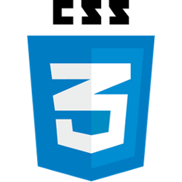
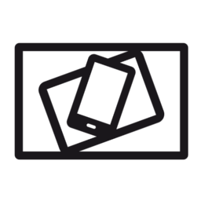
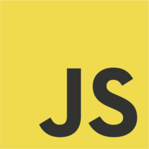
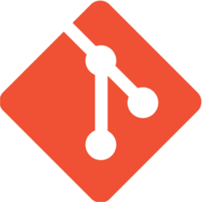

Bartosz Pracz
Junior frontEnd developer
Moja styczność z kodowaniem rozpoczęła się przy elektronice- mikrokontrolerach AVR. Proste programy pisane w języku C, które sterowały budowanymi układami. Z czasem zainteresowałem się frontEndem. Poza informatyką interesuję się także fotografią, motoryzacją i elektroniką, zaś w wolnych chwilach oddaję się największej pasji- jeździe motocyklem  HTML5
HTML5- CSS3
- RWD
- JavaScript
- jQuery
- GIT
- GIMP
- Linux
Telefon: 731 934 121
email: bartoszp1992@gmail.com